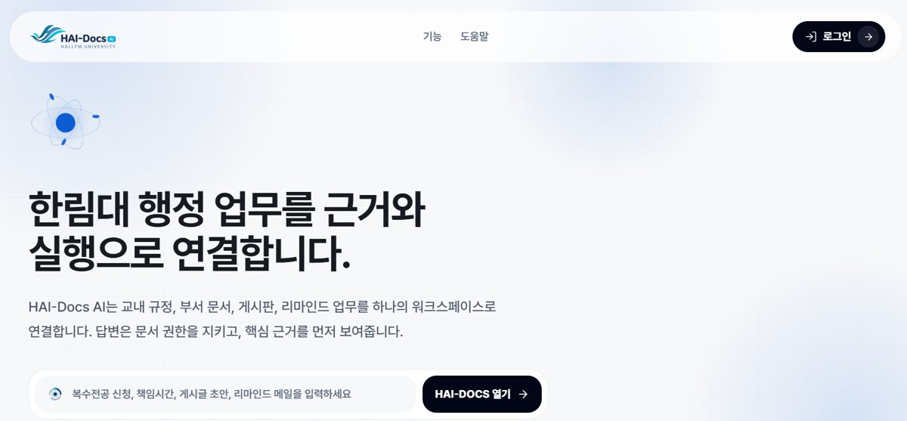

대학 규정·지침 원문에 근거한 답변과 출처를 제공하고, 기존 HWP 서식의 문서 초안과 답변·생성 이력의 감사 추적을 지원하는 AI 행정 플랫폼입니다.
- 제공
- 한림대학교 (HAI Ecosystems)
- 운영 상태
- 오픈 예정
- 대상
- 전체 구성원
- 이용 방식
- 시범 도입(무상 또는 협의) → 정식 도입(유상·기관별 협의)
- 매뉴얼
- PDF 열기
- 등록 정보
- 한림 AI 교육 포털에 등록된 정보를 자동으로 가져옵니다 (2026. 11. 3. 기준).
핵심 기능.
행정 문서를 빠르게 찾고 핵심 내용을 확인하며 업무에 필요한 근거를 정리합니다.
규정 기반 RAG 답변·출처
HWP 문서 생성
이력·근거 감사 추적
수업의 어느 단계에서 쓰나요.
설계부터 분석·개선까지 수업 6단계 중 이 서비스가 맡는 단계입니다.
01설계
02콘텐츠 생성
03수업·상호작용
04실습·학습
05평가
06분석·개선
색이 칠해진 단계가 이 서비스가 맡는 단계입니다.
HAI 활용 매뉴얼에 아직 배치되지 않은 서비스라 사무국 배치(확정 전)입니다.
AI 융합교육과정 보기